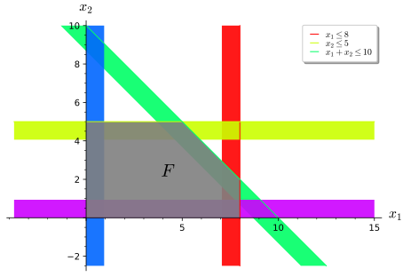
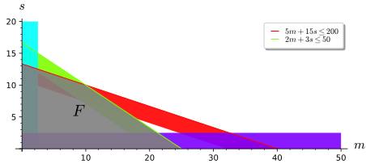
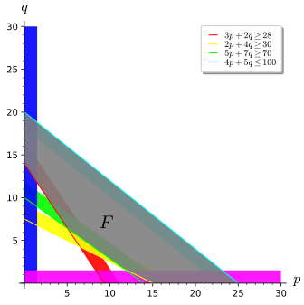
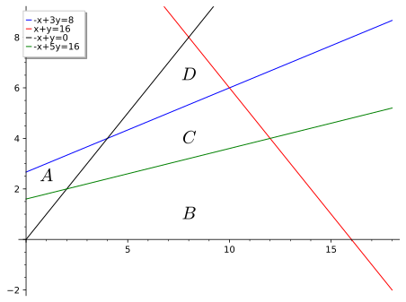

Le chapitre 3 devrait suffire pour comprendre ce chapitre.
Au chapitre 1, on a vu comment représenter des droites dans le plan et dans l’espace et comment déterminer l’intersection de droites. Au chapitre 3, il a été question de la méthode de Gauss-Jordan pour résoudre un système d’équations linéaires en échelonnant la matrice représentant ce système. L’analyse de cette forme échelonnée réduite a permis de décomposer les solutions en fonction de ce qu’on a appelé les solutions de base et la solution particulière, formant à elles deux la solution générale. Les notions de ces deux chapitres sont suffisantes pour comprendre cette section.
Dans cette section, on s’intéresse à la solution à des problèmes d’optimisation posés sous la forme d’un programme linéaire, c’est-à-dire comme un ensemble d’égalités et d’inégalités. L’objectif est de maximiser ou de minimiser une fonction tout en satisfaisant à plusieurs contraintes.
Historiquement, on retrouve les premières tentatives de résolution des problèmes que l’on étudiera dans cette section par le mathématicien russe Leonid Kantorovich et par l’économiste Wassily Leontief. Le premier souhaitait résoudre des problèmes de fabrication d’horaires, alors que le second se penchait sur des problèmes économiques divers. La nécessité de résoudre ces problèmes efficacement et rapidement fut ensuite accentuée par la Deuxième Guerre mondiale. La méthode du simplexe, que l’on étudiera, a été établie en 1947 par George Dantzig et perfectionnée au fil des ans. La méthode s’applique aux problèmes qui demandent d’optimiser une fonction de \(\mathbb{R}^n\) vers \(\mathbb{R}\) sujette à des contraintes d’inégalité.
Dans cette section, on présente le côté géométrique d’un problème de programmation linéaire lorsque le nombre de variables est relativement peu élevé. Par la suite, on présente l’algorithme du simplexe, qui permet de résoudre ces problèmes en utilisant les notions du chapitre 3. On aborde, entre autres, la notion de fonction objectif, la notion de contraintes technologiques, la notion de région admissible, le concept de variables d’écart, le concept de variable en base et de variable hors base, la notion de matrice initiale du simplexe et le concept de dualité en optimisation.
Sous-section7.2.1Approche graphique à un problème d’optimisation linéaire
On considère une fonction de deux variables \(f(x_1,x_2)=2x_1+x_2\text{.}\) Sans contraintes, cette fonction peut être aussi grande que l’on veut, en prenant de grandes valeurs pour \(x_1,x_2\text{.}\) Par contre, si l’on suppose que \(0\leq x_1\leq 8\text{,}\)\(0\leq x_2\leq 5\) et \(x_1+x_2\leq 10\text{,}\) alors les possibilités sont beaucoup plus restreintes. Il est possible d’illustrer chacune de ces contraintes dans le plan cartésien. Prisent ensemble, on obtient ce que l’on appelle la région admissible, soit l’ensemble des valeurs des variables qui satisfont aux contraintes. La figure ci-dessous illustre la région admissible de la situation décrite ci-haut. En anglais, la région admissible est appelée “feasible region”, d’où le \(F\) au centre de la région admissible. On peut voir, dans la figure, chacune des contraintes ainsi que leur intersection; l’ensemble des valeurs qui satisfont simultanément toutes les contraintes.

Figure7.2.1.Région admissible de la situation décrite.
Parmi toutes les valeurs de la région admissible, au moins un couple devrait donner le maximum de la fonction \(f(x_1,x_2)\text{.}\) Pour trouver où ce maximum est atteint, il est impossible de tester chacune des valeurs possibles. On peut cependant raisonner comme suit. Soit \(P\text{,}\) un point à l’intérieur de la région admissible. Selon la nature de la fonction \(f(x_1,x_2)=2x_1+x_2\text{,}\) la fonction est croissante selon la variable \(x_1\) et selon la variable \(x_2\text{.}\) Si le point \(P\) se trouve à l’intérieur de la région, plutôt que sur sa frontière, alors, une variation vers la droite pour \(x_1\) ou vers le haut pour \(x_2\) entraine une augmentation de la valeur de \(f\text{.}\) Pour ces raisons, le maximum devrait être atteint sur la frontière. Un argument semblable montre qu’en fait, le maximum se trouvera en un sommet du polygone formant la frontière de la région admissible.
On peut aussi arriver à cette conclusion en considérant les droites \(2x_1+x_2=k\text{,}\) pour des valeurs fixes de \(k\text{.}\) Ces droites sont un exemple de ce qu’on appelle les courbes de niveau d’une fonction. Ces courbes de niveau sont très utiles pour visualiser les fonctions de plusieurs variables à valeur réelle. Chaque valeur de \(k\) représente une valeur possible pour la fonction \(f\) et l’intersection de la région admissible avec une telle droite donne les points \(P\) de la région pour lesquels \(f(P)=k\text{.}\) En augmentant la valeur pour \(k\text{,}\) on arrive à trouver la plus grande valeur qui fait en sorte que la droite possède toujours au moins une intersection avec la région admissible. Cette intersection contient nécessairement un sommet, mais pourrait aussi contenir tout un segment du polygone.
La figure interactive ci-dessous permet de manipuler un point \(P\) dans le polygone et de voir son image par la fonction \(f\text{,}\) ainsi que de visualiser les droites \(2x_1+x_2=k\) pour des valeurs positives de \(k\text{.}\)
Il est possible de déplacer le point\(P\) dans la région admissible. La valeur de \(f(P)\) apparait. On peut alors observer que le maximum doit être atteint sur la frontière de la région. De même, on peut varier la valeur de \(k\) et observer les droites \(2x_1+x_2=k\text{.}\) On observe à nouveau que le maximum doit se trouver sur la frontière.
Figure7.2.2.Optimisation sous forme dynamique
L’exemple ci-dessus comporte les caractéristiques essentielles d’un problème de programmation linéaire en deux dimensions. L’exemple suivant contextualise un problème différent et le résout en utilisant les observations faites ci-dessus. La justification de ses observations sera présentée ultérieurement.
Exemple7.2.3.Optimisation de l’allocation de ressources.
On considère un fermier qui dispose d’une certaine superficie de terrain pour cultiver deux types de plantes : le maïs et le soja. Chaque culture nécessite un certain temps de travail et des ressources spécifiques pour atteindre un certain rendement. Le fermier dispose d’un nombre limité d’heures de travail par semaine et d’un nombre limité d’engrais.
Pour une semaine donnée, le fermier est prêt à allouer \(50\) heures à la production des deux types de plantes et il possède \(200\) kg d’engrais. Chaque tonne de maïs se vend \(450\)$ au marché et chaque tonne de soja se vend \(1000\)$. De plus, la production d’une tonne de maïs nécessite \(5\) kg d’engrais et \(2\) heures de travail, tandis que la production d’une tonne de soja requiert \(15\) kg d’engrais et \(3\) heures de travail.
Quelle devrait être la quantité produite pour chacune de ces plantes afin de maximiser le profit durant cette semaine?
qui est sujette aux contraintes \(5m+15s\leq 200\) et \(2m+3s\leq 50\text{,}\) qui constituent les contraintes logiques, ainsi que \(m\geq 0,s\geq 0\text{,}\) qui constituent les contraintes de non-négativité. On trace la région admissible à la figure suivante.

Figure7.2.4.Région admissible de la situation décrite.
La frontière possède quatre sommets dont l’un sera le maximum. Pour le trouver, on évalue la fonction à chacun des sommets. La plus grande valeur sera le maximum. Les sommets étant \((0,0),(25,0),(10,10)\) et \((\left(0,\frac{40}{3}\right)\text{,}\) on trouve
Le maximum se trouve lorsque l’on produit dix tonnes de maïs et dix tonnes de soja.
Exemple7.2.5.Optimisation de la production de chaises et de tables.
Une entreprise fabrique des meubles en bois. Elle produit deux types de meubles, des chaises et des tables. La production d’une chaise nécessite \(3\) planches de bois, \(3\) boites de vis et \(1.5\) heure de travail, tandis que la production d’une table nécessite \(10\) planches de bois, \(2\) boites de vis et \(2.5\) heures de travail. L’entreprise dispose de \(150\) planches de bois, \(72\) boites de vis et \(45\) heures de travail pour la production. Une chaise est vendue à \(50\) dollars et une table à \(100\) dollars. L’entreprise cherche à maximiser son chiffre d’affaires.
Figure7.2.6.Région admissible de la situation décrite.
La région admissible est formée d’un polygone à quatre sommets. En plus des axes, trois droites forment les côtés de ce polygone. On peut trouver les coordonnées des sommets qui ne se retrouvent pas sur les axes en déterminant les intersections de chaque paire de droites. Les équations des droites correspondent aux contraintes, en remplaçant l’inégalité par une égalité. On trouve \(P_0(0,0),P_1(0,15),P_2(10,12),P_3(20,6)\) et \(P_4(24,0)\text{.}\) L’image de chacun de ces points par la fonction \(f(c,t)\) est
On voit que la valeur maximale des ventes se trouve lorsque le nombre de chaises produites est égal à \(10\) et le nombre de tables fabriquées est de \(12\text{.}\)
Les exemples précédents montrent comment on peut maximiser une fonction linéaire soumise à des contraintes, mais la minimisation d’une telle fonction se résout avec la même méthode.
Exemple7.2.7.Minimisation du cout de nutriments.
Pour un régime particulier, une personne a besoin d’obtenir une quantité précise de nutriments chaque semaine. Il lui est possible de se procurer la poudre \(p\text{,}\) au cout de \(4\)$ par \(100\) grammes, et la poudre \(q\text{,}\) au cout de \(5\)$ par \(100\) grammes. La quantité pour chacun des trois nutriments, ainsi que la quantité quotidienne requise, sont données dans la table ci-dessous.
Table7.2.8.Les nutriments nécessaires au régime.
\(n_1\)
\(n_2\)
\(n_3\)
A (par 100g)
3
2
1
B (par 100g)
2
4
3
Besoins
28
30
20
La personne peut se permettre un budget maximal de \(100\)$ par semaine pour ces produits.
On peut traduire ce problème en considérant la fonction \(g(A,B)=4x+5y\) qui est assujettie aux contraintes
La figure ci-dessous illustre la région admissible.

Figure7.2.9.Région admissible de la situation décrite.
Les sommets de la région admissible se trouve en \(P_1(0,14),P_2(0,20),P_3(25,0),P_4(15,0),P_5\left(\frac{56}{11},\frac{70}{11}\right)\) et \(P_6\left(\frac{35}{3},\frac{5}{3}\right)\text{.}\) Le cout pour chacune de ces paires est de
Le cout minimal est donc, à deux décimales près, de \(52.18\)$. À ce prix, la personne achètera, toujours à deux décimales près, \(\frac{56}{11}\ast 100\approx 509,09\) grammes de la poudre \(p\) et \(\frac{70}{11}\ast 100\approx 636.36\) grammes de la poudre \(q\text{.}\)
Une certaine structure se dégage des problèmes précédents. Une fonction linéaire doit être optimisé en fonction de contraintes, aussi linéaires, qui viennent restreindre les valeurs possibles de cette fonction. Comme tout est linéaire, il est plausible de penser que l’on peut encoder l’information pertinente à un tel problème dans une matrice ou un vecteur. La forme canonique d’un problème de programmation linéaire permet de faire l’encodage de cette manière. On donne dès maintenant la définition générale. La méthode pour résoudre un problème où un nombre trop grand de variables est présent pour le résoudre géométriquement sera présentée dans la sous-section suivante.
Définition7.2.10.Forme canonique d’un problème de programmation linéaire.
On considère une fonction linéaire \(f(x_1,x_2,\ldots , x_n)=c_1x_2+c_2x_2+\cdots +c_nx_n\) et un ensemble de contraintes de la forme
appelées les contraintes d’inégalité, ainsi que les contraintes de non-négativité
\begin{equation*}
x_i\geq 0 \text{ pour tout } i=1,\ldots , n\text{.}
\end{equation*}
Si l’objectif est de maximiser la fonction \(f\) sous les contraintes, on dit alors que le problème est un problème de programmation linéaire et qu’il est sous forme canonique. La fonction \(f\) est appelée la fonction objectif. De manière naturelle, il en découle la réécriture suivante:
Dans cette formulation, il est sous-entendu qu’une inégalité entre deux vecteurs s’applique sur chacune des composantes correspondantes.
Un vecteur \(\vec{x}\) qui satisfait les deux contraintes est une solution admissible. L’ensemble des solutions admissible forme la région admissible\(\mathcal{R}\) et le vecteur \(\vec{x}_{\max}=\max_{\vec{x}\in \mathcal{R}}(f(\vec{x}))\) est la solution optimale.
Cette forme suppose que l’on cherche toujours un maximum de la fonction objectif. Pour résoudre un problème de minimisation sur une fonction \(g(x)\text{,}\) on peut remplacer par \(f(x)=-g(x)\text{.}\) Ainsi, lorsque \(f(\vec{x})\) atteint son maximum, la fonction \(g(\vec{x})\text{,}\) elle, atteint son minimum. Également, on peut transformer les contraintes de la forme
En tenant compte des contraintes de non-négativité, le problème est sous forme canonique. Les contraintes, de même que la fonction objectif, n’ont pas eu à être réécrites puisqu’elles étaient déjà sous la bonne forme.
En tenant compte des contraintes de non-négativité, le problème est sous forme canonique. Les contraintes, de même que la fonction objectif, n’ont pas eu à être réécrites puisqu’elles étaient déjà sous la bonne forme.
Cette fois-ci, le problème, sous sa forme initiale, comprend des contraintes de la forme \(\geq\) et porte sur la minimisation d’une fonction. On remplace la fonction par \(f(p,q)=-4p-5q\text{.}\) On peut alors poser \(\vec{c}=(-4,-5),\vec{x}=(p,q)\text{.}\) On remplace les trois contraintes
En tenant compte des contraintes de non-négativité, le problème est maintenant sous forme canonique.
Pour toute combinaison de fonction objectif et d’ensemble de contraintes sous forme canonique, il n’y a que trois choses qui peuvent survenir. Les contraintes peuvent être incompatibles, ce qui fait que le problème n’a pas de solution. Ce serait le cas si, par exemple, on demandait à la fois d’avoir \(x\geq 5\) et \(x\leq 3\text{.}\) Les contraintes peuvent faire en sorte que la région admissible n’est pas bornée. Si ceci entraine que la fonction objective peut prendre des valeurs aussi larges que l’on veut, alors le maximum n’existe pas. Finalement, dans tous les autres cas, la fonction objective atteint un maximum. Ce dernier se trouve à au moins un des sommets de la région admissible.
On termine avec des commandes Sage en lien avec la sous-section.
Calcul7.2.12.Géométrie de la programmation linéaire avec Sage.
Sage possède un module pour explorer la programmation linéaire. On y définit les vecteurs \(\vec{c},\vec{b}\text{,}\) ainsi que la matrice \(A\text{.}\) En principe, il n’est pas obligatoire d’avoir la matrice du problème sous forme canonique, car il est possible de spécifier le type d’inégalité et le type de problème (maximisation ou minimisation). Une fois les vecteurs et la matrice définis, la commande InteractiveLPProblem(A, b, c, ["x", "y"], variable_type=">=") permet de créer la structure du programme linéaire. Les arguments A,b,c sont, dans l’ordre, la matrice des contraintes, le vecteur de ces contraintes et le vecteur des coefficients de la fonction objectif. L’argument ["x", "y"] donne le nom aux variables. Finalement, l’argument variable_type donne le type d’inégalité, à savoir si les variables doivent être non négatives ou autre chose.
Dans un premier temps, on regarde l’exemple d’introduction qui a servi à motiver la sous-section. En ajoutant la ligne %display typeset à la cellule Sage, il est possible de visualiser l’écriture du problème à même sage.
La commande feasible_set permet de visualiser la région admissible (lorsque le nombre de variable est deux ou trois).
On peut aussi reproduire la région admissible et les contraintes à l’aide de la commande plot_feasible_set. Cette dernière offre plus de flexibilité quant au secteur qui peut être visualisé et à l’opacité de la région admissible.
On peut obtenir directement les coordonnées des sommets de la région admissible à l’aide de la commande vertices.
Ce format n’est pas pratique pour les calculs puisqu’il contient du texte. On peut extraire les vecteurs à l’aide de la fonction suivante.
S contient maintenant la liste des sommets de la région admissible. Comme la fonction objectif est encodée dans le vecteur \(\vec{c}\text{,}\) on peut l’évaluer en chacun des points de S à l’aide du produit scalaire.
Bien entendu, on peut aussi calculer la solution optimale avec une commande.
Sage peut aussi calculer graphiquement la solution. Il illustre quelques-unes des courbes de niveau et indique le maximum sur le graphique avec un flèche noire. Cette flèche, toujours parallèle à la courbe de niveau, indique la direction qui produit la plus grande variation de la fonction. Dans un cours de calcul de fonctions à plusieurs variables, cette direction est celle qui maximise le gradient de la fonction. Cette direction est aussi très utile dans les problèmes d’apprentissage profond.
On reprend maintenant l’exemple 7.2.7, qui n’était pas sous forme canonique. On montre que Sage peut quand même travailler avec cette forme, si on lui spécifie correctement le type de contraintes et de problème. On peut aussi convertir un problème à sa forme canonique.
Si l’on entre les valeurs telles qu’elles sont données dans le problème, sans égard à la forme canonique, on voit rapidement que le programme créé par Sage ne correspond pas à celui que l’on veut résoudre.
On remédie à cette situation en ajoutant un argument problem_type="min" et un argument constraint_type. Ces arguments permettent à Sage de comprendre que l’on cherche le minimum de la fonction et que les trois premières contraintes sont de type \(\geq\text{.}\)
À partir de ce programme corrigé, on peut extraire les mêmes informations que pour le problème d’introduction.
Il est possible d’obtenir la matrice, le vecteur \(\vec{b}\) et le vecteur \(c\) d’un problème de programmation linéaire.
Finalement, la commande standard_form permet de convertir un programme existant en forme canonique. On peut en constater l’effet en regardant la matrice et les vecteurs associés au nouveau programme.
Sous-section7.2.2L’algorithme du simplexe
La méthode de résolution par la géométrie des problèmes de programmation linéaire est pratique, mais n’est pas envisageable lorsque le problème comporte plusieurs variables. À titre d’exemple, on considère une compagnie qui possède plusieurs points de vente et un certain nombre d’entrepôts. Lorsque les points de vente passent une commande à la maison mère, celle-ci doit regarder l’inventaire disponible dans ses entrepôts et décider de la manière la plus efficace de livrer à ses points de vente les biens demandés.
On peut facilement imaginer une grande compagnie avec des centaines de boutiques, des dizaines d’entrepôts et des milliers de produits. Imaginer la géométrie d’un tel problème est impensable. Si l’on pense au fait que le maximum se trouve sur la frontière, plus particulièrement sur l’un des sommets de la région admissible, on peut alors intuitivement élaborer la méthode suivante pour le trouver. On fixe d’abord un sommet de la région admissible. Souvent, ce sommet sera celui où toutes les variables sont nulles; ce sommet est rarement l’extrémum cherché. Comme la valeur cherchée se trouve à l’un des sommets, on regarde tous les sommets voisins du sommet choisi initialement et l’on compare la variation dans chacune des directions. Celle qui offre la plus grande variation (dans le cas de la recherche d’un maximum, on voudra une variation positive) est choisie et l’on se rend jusqu’au prochain sommet. On répète ensuite jusqu’à ce que toutes les directions voisines à un sommet ne procurent plus de variation permettant d’améliorer la fonction objectif. On a alors atteint l’extremum recherché. La figure 7.2.2 permet d’illustrer cela dans le cas où il y a deux variables. En partant du point \(P\) à l’origine, on peut choisir de se déplacer horizontalement vers le point \((8,0)\) ou verticalement vers le point \((0,5)\text{.}\) Puisque chaque unité de déplacement en \(x\) produit une variation de la fonction objectif de \(2\) et que chaque unité de déplacement en \(y\) produit une variation de la fonction objectif de \(1\text{,}\) on choisit de se déplacer vers le point \((8,0)\text{.}\) Par la suite, il ne reste qu’une direction à choisir étant donné que chaque sommet n’est relié qu’à deux autres. Le principe est le même pour un plus grand nombre de variables, avec plus de choix possibles pour naviguer entre les sommets.
Pour effectuer la méthode du simplexe, on commence par transformer les contraintes d’inégalité (sauf les contraintes de positivité) en leur ajoutant une variable d’écart positive. Ainsi, la contrainte \(x+y\leq 5\) devient \(x+y+e=5\) où \(e\geq 0\text{,}\) puisque \(e=5-(x+y)\) et que l’inégalité stipule que \(x+y\) est inférieur à \(5\text{.}\)
Définition7.2.13.Variable d’écart.
Une variable d’écart est une variable positive qui est ajoutée au plus petit côté d’une inéquation afin de la transformer en égalité.
Exemple7.2.14.Ajout des variables d’écart dans les contraintes.
On reprend les données de la forme canonique des exemples 7.2.3, 7.2.5 et 7.2.7 afin de convertir les contraintes d’inégalité sous forme d’égalité.
Lorsqu’un problème de programmation linéaire à \(n\) variables possède \(m\) contraintes d’inégalité, l’ajout de variables d’écart crée un système d’équations linéaires à \(m\) équations et \(m+n\) inconnues. Une solution à ce système d’équations est appelée une solution de base si au plus \(m\) des variables sont non nulles. La solution est admissible lorsque toutes les variables sont plus grandes ou égales à zéro. Ensemble, ces deux conditions mènent à la définition suivante.
Définition7.2.15.Solution de base admissible.
Soit \(A\text{,}\) une matrice \(m\times (m+n)\) et \(\vec{b}\in \mathbb{R}^m\text{,}\) un vecteur. Une solution à l’équation \(A\vec{x}=\vec{b}\) est une solution de base admissible si toutes les valeurs de la solution sont supérieures ou égales à zéro et qu’au plus \(m\) de ces valeurs sont non nulles.
Les variables non nulles d’une solution de base sont appelées les variables en base. Les variables nulles sont dites hors base.
On considère le problème d’introduction cherchant à maximiser \(f(x_1,x_2)=2x_1+2x_2\) sous les contraintes
Les deux premières colonnes représentent les variables du problème en soi, les trois suivantes contiennent les valeurs des variables d’écart et la dernière est celle de la partie augmentée du système. En plus de la ligne verticale pour la partie augmentée, une autre ligne verticale a été ajoutée afin de séparer les deux catégories de variables.
Sans même échelonner cette matrice, on peut voir que, si \(x_1=x_2=0\) et \(e_1=8,e_2=5\) et \(e_3=10\text{,}\) on a une solution. Comme il y a \(3\) variables non nulles, la solution est de base et, puisque toutes les variables sont plus grandes ou égales à \(0\text{,}\) elle est aussi admissible.
Une autre solution de base admissible est possible lorsque \(x_1=8,x_2=5,e_1=0,e_2=0,e_3=-3\text{.}\) On remarque alors que cette solution est de base, puisqu’il y a \(3\) variables non nulles, mais qu’elle n’est pas admissible, étant donné la présence du négatif dans la troisième variable d’écart.
Les solutions admissibles se retrouvent dans la région admissible (sans surprise) et les solutions de base, elles, se retrouvent à l’intersection des contraintes d’inégalité. Les solutions de base admissibles sont donc aux sommets de la région admissible. La figure ci-dessous est une modification de la figure 7.2.2 dans laquelle on a libéré le point \(P\) et l’on a ajouté la valeur des variables du problème et des variables d’écart. On peut voir qu’une solution est admissible si elle est dans la région admissible et est de base lorsqu’elle est sur l’un des sommets.
Il est possible de déplacer le point\(P\text{.}\) La valeur des cinq variables du SEL apparait alors. Le texte “solution de base” et le texte “solution admissible” changent de couleur selon la position du point \(P\text{.}\)
Figure7.2.16.Solution de base admissible.
Dans la matrice \(A\) de l’équation (7.2.1), on peut voir dans les colonnes \(3,4\) et \(5\) une matrice identité. En fixant aux variables associées à ces colonnes les valeurs dans la dernière colonne, on a obtenu la première solution présentée plus haut. Si l’on effectue l’opération élémentaire \(L_3-L_1\to L_3\) suivie de l’opération élémentaire \(L_3-L_2\to L_3\text{,}\) on obtient la matrice
En regardant maintenant les colonnes \(1,2\) et \(5\text{,}\) on trouve à nouveau une matrice identité qui, comme ci-dessus, offre la solution de base \(x_1=8,x_2=5,e_1=0,e_2=0,e_3=-3\) obtenues auparavant. Le fait que les solutions de base se trouvent de cette manière donne un sens à l’appellation “de base”. En effet, dans le cas des systèmes d’équations linéaires, la définition 3.3.4 et le reste de cette section montrent que, pour trouver les solutions de base d’un système d’équations linéaires, on peut utiliser la matrice identité qui se trouve à l’intérieur de la forme échelonnée réduite de la matrice du système. Par contre, la solution trouvée ici n’est pas admissible, car elle ne respecte pas la troisième contrainte.
Il est donc possible de trouver les solutions de base (celles qui sont associées au problème d’optimisation) en effectuant des opérations élémentaires sur les lignes afin de changer la position de la matrice identité se trouvant à l’intérieur de la matrice des contraintes. Par exemple, à partir de la matrice \(A'\) de l’équation (7.2.2), on peut remettre la variable \(e_2\) en base et obtenir une solution de base en effectuant d’abord l’opération élémentaire \(-L_3\to L_3\text{,}\) puis l’opération élémentaire \(L_2-L_3\to L_2\text{.}\) Ces opérations donnent la matrice
offrant cette fois-ci comme solution \(x_1=8,x_2=2,e_1=0,e_2=3,e_3=0\text{.}\) La figure 7.2.16 permet de constater que cette réponse est la solution optimale trouvée tout au début de la section. L’opération qui consiste à prendre une des variables et de transformer sa colonne à l’identité est appelé le pivotage. Le nom vient du fait que le rôle de la variable ressemble à celui d’un pivot, qui est le seul élément non nul de sa colonne et valant \(1\text{,}\) sans toutefois être le premier élément non nul de la ligne.
Quelle entrée doit-on choisir pour effectuer le pivotage? En excluant la dernière colonne, il y a potentiellement soixante manières de transformer la matrice pour y faire apparaitre une matrice identité dans trois de ses colonnes. Pour un système à plus d’équations et d’inconnues, le nombre est encore plus élevé. Pour s’assurer de ne pas obtenir des solutions non admissibles, on choisit la ligne de l’équation pour effectuer le pivotage en considérant les deux critères suivants:
Si l’on veut pivoter l’entrée en position \(i,j\text{,}\) il faut que le coefficient \(a_{i\,j}\) soit plus grand que zéro. Ceci assure que le terme dans la partie augmentée sera positif. Comme ce terme correspond à la valeur de la variable de la colonne \(j\) dans la solution de base, elle doit être positive pour être admissible.
Une fois décidé que la colonne \(j\) sera celle à pivoter, on détermine la ligne \(i\) en choisissant, parmi celles où les entrées de la colonne \(j\) sont positives, la ligne où le ratio \(b_i/a_{i\,j}\) est le plus petit. Ceci assure que, dans l’élimination de la colonne \(j\text{,}\) les autres termes de la partie augmentée restent positifs.
Une dernière considération, qui sera discutée plus tard, prend en compte un vecteur augmenté comportant des entrées nulles ou négatives. Cette situation est fréquente lorsque le problème à résoudre est un problème de minimisation.
Toutes les entrées de la matrice des coefficients sont positives, ce qui signifie que l’on peut pivoter selon n’importe quelle variable. Si l’on veut pivoter selon la variable \(c\text{,}\) quelle ligne doit-on choisir?
On choisit la ligne deux, puisque \(\frac{72}{3}\leq\frac{45}{3/2}\leq \frac{150}{3}\text{.}\) Afin de voir l’effet des trois choix de ligne et pour confirmer que la ligne deux est bien celle à privilégier, on utilise Sage pour voir l’effet du pivotage pour chaque entrée de la première colonne.
On voit en effet que seule la ligne deux conserve des valeurs positives dans la partie augmentée.
Le choix de la ligne se fait donc à partir de conditions sur les éléments des lignes de la matrice. Qu’en est-il du choix de la colonne? C’est la fonction objectif qui guidera le choix de la variable sur laquelle pivoter. Comme il est décrit dans l’introduction de cette sous-section, on cherche à se déplacer d’une solution de base admissible à une autre en allant dans la direction qui offre la plus grande variation de la fonction objectif. Puisque la fonction est linéaire, les variations dans chacune des directions sont simplement données par la valeur des coefficients qui multiplient les variables. On ajoute une ligne au bas de la matrice contenant les contraintes avec les variables d’écart ainsi qu’une colonne entre la dernière variable d’écart et la colonne représentant la partie augmentée. Dans l’exemple d’introduction, où la fonction à maximiser est \(f(x_1,x_2)=2x_1+x_2\text{,}\) on crée une nouvelle équation en écrivant
La colonne à choisir pour pivoter est celle qui a la plus petite valeur négative dans la dernière ligne (négative, car les coefficients ont changé de côté dans l’équation). Si toutes les valeurs sont positives, il n’est plus possible d’améliorer la solution. Dans ce cas, la première variable est celle sur laquelle on pivote et l’on choisit la première ligne, puisque \(8\leq 10\text{.}\) Lorsque l’on effectue les opérations élémentaires, on considère également la dernière ligne. Après pivotage en utilisant les opérations élémentaires \(L_3-L_1\to L_3\) et \(L_4+2L_1\to L_4\text{,}\) la matrice devient
La matrice identité se trouve dans les colonnes un, quatre et cinq, offrant comme solution de base \(x_1=8,x_2=0,e_1=0,e_2=5,e_3=2\) et donnant comme valeur \(16\) pour la fonction \(f\text{.}\) Ceci correspond bien à une solution de base admissible, que l’on peut visualiser sur la figure 7.2.16.
La seule valeur négative de la dernière ligne est dans la deuxième colonne. C’est donc selon \(x_2\) que le pivotage se poursuit. La troisième ligne sera choisie étant donné que \(2\leq 5\text{.}\) Après les opérations élémentaires, on a
La solution de base correspondant à cette solution est \(x_1=8,x_2=2,e_1=0,e_2=3,e_3=0\text{,}\) qui donne comme valeur \(18\) à la fonction \(f\text{.}\) Cette solution est bel et bien la solution optimale au problème, car on voit que toutes les valeurs de la dernière ligne de la matrice \(A''\) sont positives. En réécrivant l’équation correspondant à cette dernière ligne, on voit que \(f=18-e_1-e_3\) et, comme \(e_1,e_3\) sont positives ou nulles, \(18\) doit être le maximum.
Définition7.2.18.Matrice initiale du simplexe.
On considère un problème de programmation linéaire à \(n\) variables et \(m\) contraintes, sous sa forme canonique. On note \(A\text{,}\) la matrice \(m\times n\) des coefficients des contraintes, on note \(I_3\text{,}\) la matrice identité \(m\times m\text{,}\) on note \(\vec{b}\in\mathbb{R}^n\text{,}\) le vecteur des membres de droite et finalement, on note \(\vec{c}\in \mathbb{R}^n\text{,}\) le vecteur des coefficients de la fonction objectif.
La matrice initiale du simplexe associée au problème de programmation linéaire est la matrice
La partie de matrice contenant les matrices \(A\) et \(I\) est appelé le bloc principal de la matrice \(S\text{.}\) 1
La matrice initiale du simplexe permet d’exécuter efficacement les étapes de l’algorithme du simplexe, présenté ci-dessous, et offre une manière concise de visualiser les informations pertinentes.
Algorithme7.2.19.La méthode du simplexe.
On considère un problème de programmation linéaire sous forme canonique et \(S\text{,}\) sa matrice initiale du simplexe. Pour trouver le maximum de la fonction objectif, on suit la procédure suivante.
Liste7.2.20.L’algorithme du simplexe
Regarder la dernière ligne de la matrice du simplexe. Si toutes les entrées correspondant aux variables des contraintes et aux variables d’écart sont positives, la solution est optimale et l’algorithme est terminé. En cas de présence de valeurs négatives, sélectionner la colonne de la variable dont l’entrée de la dernière ligne est la plus petite (négative) pour effectuer le pivotage.
Pour chaque entrée positive de la colonne choisie, calculer le rapport entre l’entrée de la dernière colonne et celle de la colonne choisie. La ligne où ce rapport est le plus petit est la ligne de pivot.
Effectuer le pivotage en rendant chaque élément de la colonne pivot égal à zéro, hormis ce pivot. La matrice offre maintenant une nouvelle solution de base admissible pour le problème.
Répéter les étapes ci-dessus jusqu’à ce que toutes les entrées de la dernière ligne soient positives.
Exemple7.2.21.L’algorithme du simplexe en action.
On considère le problème de la culture de maïs et de soja de 7.2.3. La matrice initiale du simplexe est
On applique les étapes de l’algorithme du simplexe.
La dernière ligne comporte deux valeurs négatives. La plus petite est dans la deuxième colonne, c’est donc la variable \(s\) qui sera sélectionnée pour effectuer le pivotage.
Toutes les valeurs de la partie supérieure de la matrice sont positives. On calcule les rapports de l’entrée de la dernière colonne sur l’entrée de la deuxième colonne pour les lignes de la matrice. On obtient, pour la ligne un, le rapport \(200/15\approx 13.33\text{,}\) et pour la deuxième ligne, le rapport \(50/3\approx 16.66\text{.}\) On sélectionne la première ligne pour effectuer le pivotage.
Le pivot est donc l’entrée de la première ligne et de la deuxième colonne. On applique les opérations élémentaires pour modifier la matrice. On a
Puisque la dernière ligne comporte toujours une entrée négative, on recommence le processus.
La seule valeur négative de la matrice est dans la première colonne. On pivote selon la variable \(m\text{.}\)
Les deux valeurs du haut de la première colonne sont positives. On compare donc les ratios. Puisque \(10\leq 40\text{,}\) on pivote par rapport à la deuxième ligne.
On applique les opérations élémentaires pour retrouver des zéros aux lignes non pivots, l’entrée en position \(2,1\) étant déjà égale à \(1\text{.}\) On obtient
Comme la dernière ligne ne contient que des entrées positives, l’algorithme est terminé.
On lit la solution dans la matrice. La valeur maximale se trouve dans la dernière ligne et vaut \(14500\text{.}\) La solution est atteinte lorsque \(s=10\) (obtenue de la deuxième ligne) et \(m=10\) (tirée de la première ligne).
On regarde un autre exemple dans lequel on ne décrit pas tous les détails des étapes de l’algorithme. On se contente de faire les opérations nécessaires en justifiant à l’occasion certains choix.
Exemple7.2.22.Optimisation de la production de chaises et de tables avec la méthode du simplexe.
On considère à nouveau le problème de l’exemple 7.2.5, dont la matrice initiale du simplexe est donnée par
Toutes les entrées de la dernière ligne étant positives, l’algorithme se termine. La solution maximale donne une production de \(10\) chaises et \(12\) tables, pour une valeur de \(1700\) dollars. La solution correspond à celle que l’on a trouvée graphiquement à l’exemple 7.2.5.
Avec la méthode du simplexe, comme présentée à l’algorithme 7.2.19, il peut survenir certains problèmes. Par exemple, il n’est pas impossible que, dans les colonnes correspondant aux entrées négatives de la dernière ligne, il n’y ait pas de valeurs positives dans le haut de la matrice. On ne pourra pas effectuer le pivotage de l’étape 7.2.20:2. Cette situation se produit lorsque la région admissible n’est pas bornée. Dans ce cas, il n’y a pas de maximum possible.
Aussi, autant à l’étape 7.2.20:1 qu’à l’étape 7.2.20:2, il pourrait y avoir égalité entre les valeurs considérées et un choix à faire. Dans de rares cas, cela peut amener l’algorithme à revenir sur lui-même (il devient cyclique) et rendre la recherche d’optimum impossible. Toutefois, ces cas ne surviennent presque jamais. Dans les autres cas où, en cas d’égalité, un choix est à faire, tous les choix devraient être équivalents, à peu de choses près.
La dernière chose à considérer est le cas des problèmes de minimisation. En théorie, la forme canonique transforme le problème en un problème de maximisation, mais la dernière colonne pourrait alors contenir des nombres négatifs. Cette situation ne survient normalement pas dans le cadre d’un vrai problème de maximisation, en raison du fonctionnement de l’algorithme qui s’assure en choississant le pivot que toutes les entrées de la dernière colonne demeurent positives. Donc si aucune des entrées n’était négative au départ, elles resteront positives tout le long du processus. La prochaine sous-section explique comment traiter,avec l’algorithme du simplexe, les problèmes de minimisation et le cas où un membre de droite négatif est présent dès le départ.
Sous-section7.2.3Problèmes de minimisation
Pour que l’algorithme du simplexe fonctionne, toutes les entrées de la dernière colonne doivent être positives afin que les variables d’écart puissent fournir une solution admissible, ces variables devant être positives. En présence de valeurs négatives dans la dernière colonne, on effectue le pivotage sur l’une des entrées négatives d’une ligne dont l’élément de la dernière colonne est aussi négatif. Si une telle entrée n’existe pas et que la seule entrée négative de la ligne se trouve dans la dernière colonne, alors le problème ne possède pas de solution (cela signifierait, par exemple, que la somme de variables positives doit être plus petite qu’un nombre négatif).
À titre d’exemple, on considère le problème de maximisation sous forme canonique suivant. La fonction à maximiser est
Dans un premier temps, on remarque qu’aucune entrée de la dernière ligne n’est négative. Par contre, la matrice possède un élément négatif dans sa dernière colonne, ce qui fait qu’elle n’est pas, en principe, une matrice initiale du simplexe. La solution initiale de cette matrice, donnée par \(x=y=0, e_1=-9,e_2=1\) et \(f=0\text{,}\) n’est même pas admissible, puisque \(e_1< 0\text{.}\) Afin de pouvoir utiliser l’algorithme du simplexe, on commence par un pivotage sur la première ligne, qui contient l’entrée négative égale à \(-9\text{.}\) Dans ce cas-ci, on peut pivoter par rapport à n’importe quelle variable, puisque \(x\) et \(y\) sont tous deux négatifs dans la première ligne. Si l’on choisit de pivoter pour \(x\text{,}\) la matrice devient
Encore une fois, il y a une entrée négative dans la colonne des \(b_i\text{,}\) ce qui fait que l’on doit pivoter dans la ligne correspondante avant de poursuivre. L’exercice 7.2.5.7 montre que l’on aurait pu éviter une étape en choisissant \(y\) comme premier pivot. La seule entrée négative du bloc principal de la ligne deux étant dans la colonne \(y\text{,}\) on pivote sur cette valeur. On obtient
Cette fois, les valeurs des \(b_i\) sont toutes positives. Mais comme les coefficients sur la dernière ligne sont tous positifs (sauf pour la valeur de \(f\)), l’algorithme se termine. Le maximum de la fonction est donc \(-22\text{.}\) Dans un scénario concret, ce problème aurait sans doute été un problème de minimisation, le minimum recherché aurait donc été de \(22\text{.}\)
Exemple7.2.23.Résolution du problème des nutriments par la méthode du simplexe.
On considère à nouveau le problème de la minimisation du cout dans l’optimisation du régime de l’exemple 7.2.7. La forme canonique de ce problème a été donnée à l’exemple 7.2.11. On veut résoudre ce problème à nouveau, mais à l’aide de la méthode du simplexe. La matrice initiale du simplexe est
La section du vecteur \(\vec{b}\) contient trois entrées négatives. La ligne de chacune de ces entrées contient plusieurs valeurs négatives. Bien qu’en théorie on peut effectuer le pivotage sur n’importe laquelle de ces valeurs, on a intérêt à en choisir une qui réduira le nombre de calculs subséquents à effectuer. Pour cela, contrairement à ce qui est normalement fait, on choisit l’entrée dont le ratio \(b_i/a_{i\,j}\) est le plus grand. Ceci éliminera en une étape de pivotage les négatifs de la section des \(b_i\text{.}\) Dans la matrice \(S\) de cet exemple, c’est l’entrée de la ligne deux et de la colonne un qui produit ce plus grand ratio. Le pivotage donne la nouvelle matrice
Maintenant que la section du vecteur \(\vec{b}\) ne contient que des valeurs positives, l’algorithme du simplexe se poursuit comme dans le contexte régulier. Il reste une entrée négative dans la dernière ligne. On effectue un pivotage selon la deuxième variable. Parmi les entrées positives de la colonne, celle avec le plus petit ratio se trouve dans la troisième ligne. C’est donc par rapport à cette entrée que le pivotage s’effectue. On obtient
Une autre entrée négative est apparue dans la dernière ligne, ce qui nécessite la poursuite de l’algorithme. Le pivot se trouve dans la première ligne, à la quatrième colonne. On obtient
Cette nouvelle matrice ne contient que des entrées positives dans la section du vecteur des coefficients de la fonction objectif. L’algorithme se termine. La solution optimale est \(-\frac{574}{11}\approx -52.18\text{,}\) ce qui signifie que le minimum de la fonction objectif associé au problème initial est d’environ \(52.18\) dollars. Ce minimum est atteint lorsque la quantité de poudre \(A\) achetée est environ de \(\frac{56}{11}\times 100 \approx 509.09\) grammes et que la quantité de poudre \(B\) est d’environ \(\frac{70}{11}\times 100\approx 636.36\) grammes. Ceci est conforme à la solution trouvée à l’aide d’arguments géométriques à l’exemple 7.2.7.
Si l’on a un problème de programmation linéaire et que, pour une raison quelconque, l’on considère le problème équivalent d’optimalité opposée (un problème de maximum pour un problème de minimum initial et vice-versa), on parle parfois du problème dual. Le problème initial est, quant à lui, appelé le problème primal. Le problème dual d’un problème de minimisation est toujours un problème de maximisation et le problème dual d’un problème de maximisation est toujours un problème de minimisation. La méthode du simplexe modifiée pour résoudre les problèmes de minimisation est parfois appelée la méthode du simplex dual.
Calcul7.2.24.La méthode du simplexe sur Sage.
Sage est capable de produire le résultat de la méthode du simplexe. Il peut aussi effectuer l’algoritme, étape par étape. On sait déjà, grâce à l’exemple 7.2.12, que Sage est en mesure de donner la solution à l’aide de la commande optimal_solution. On peut aussi lui demander d’effectuer la méthode du simplexe, il retournera le résultat produit par l’algorithme. Il faut toujours convertir le problème à sa forme canonique, même s’il est déjà sous cette forme.
Le rendu de Sage est différent de celui proposée dans la section. Sage présente un tableau du simplexe dans lequel les variables en base, soit celles qui correspondent aux colonnes de la matrice identité dans la méthode présentée dans la section, sont isolées à gauche du tableau. Les lignes correspondantes à ces entrées sont écrites sous la forme d’une équation. Le membre de droite, composé des entrées du vecteur \(\vec{b}\text{,}\) se trouve plutôt à gauche et Sage inscrit l’information à l’aide des équations plutôt qu’à l’aide de la matrice. De plus, la dernière ligne, associée à la fonction objectif, a ses coefficients positifs plutôt que négatifs. Sage va toujours nommer les variables d’écart par \(x_k,x_{k+1},\ldots, x_{k+m-1}\text{,}\) où \(k\) est égal au nombre de variables du problème.
L’écriture comme Sage la propose a pour avantage d’être plus concise, elle permet de voir encore plus rapidement la solution. Par contre, elle a le désavantage qu’il est difficile de passer d’un tableau à l’autre sans faire d’erreurs, puisque la position des variables change souvent. La méthode présentée fait le compromis entre la facilité de lecture et l’organisation mieux structurée. Pour un ordinateur bien programmé, on peut s’épargner beaucoup de calculs en ne considérant que les éléments importants.
Afin de voir la différence entre la méthode présentée dans la section et celle qui est offerte par Sage, on regarde l’application de l’algorithme du simplexe sur le problème de l’exemple 7.2.22 pour comparer le rendu des deux démarches.
La première étape que l’on avaite fait à l’exemple 7.2.22 était de pivoter selon l’entrée de la première ligne et deuxième colonne. Exprimé dans le langage des variables en base et hors base, cela signifie que l’on fait entrer \(t\) en base, ce qui fait sortir la première variable d’écart. On peut d’ores et déjà constater que Sage diverge de l’algorithme, car il fait plutôt entrer la variable \(c\) en base, ce qui fait sortir la deuxième variable d’écart. En d’autres mots, il semble que Sage ne suive pas l’algorithme du simplexe pour sélectionner la bonne colonne. Il y a probablement une raison à cela, mais l’auteur ne la connait pas.
Comme la première étape ne concorde pas, il est difficile de comparer les démarches. Par contre, il est possible de demander à Sage d’effectuer une opération de pivotage choisie. Ainsi, on pourra comparer le cheminement des deux approches. Dans sage, la matrice initiale du simplexe est appelée initial_dictionary. On attribue à D ce tableau initial. L’option %display typeset permet de visualiser le rendu. Le tableau correspond à celui que Sage présente dans l’application de son algorithme, sans les couleurs.
Sage peut vérifier si le tableau en cours est admissible ou optimal.
On peut vérifier quelles sont les variables en base, la solution de base et la valeur de la fonction objectif.
Pour effectuer une étape de pivotage, on doit préciser quelle variable entre en base et quelle variable sort. Ceci revient à préciser la colonne et la ligne. Pour reproduire la démarche de l’exemple 7.2.22, on fait entrer \(c\) et sortir ce que Sage appelle \(x_3\text{.}\) On peut faire afficher le tableau afin de voir le choix effectué et de valider s’il correspond à ce que l’on veut. Par la suite, on met le tableau à jour. On affiche à nouveau pour voir l’effet du pivotage.
On peut reconnaitre dans le tableau les éléments correspondants à la matrice du simplexe une fois le premier pivotage effectué. On valide encore les informations avec Sage.
La prochaine étape avait été de pivoter selon l’entrée en position \(3,1\text{,}\) soit la troisième ligne et la première colonne. Ceci signifie que l’on fait entrer la variable \(c\) en base et que l’on rend \(e_5\) (\(x_5\) pour Sage) hors base.
La solution optimale est atteinte, l’algorithme est terminé.
Sous-section7.2.4Un peu plus loin
D’importance historique, l’algorithme du simplexe a maintenant été surpassé par d’autres, plus efficaces, plus rapides ou pouvant résoudre des problèmes plus complexes. Par exemple, dans beaucoup de problèmes, il n’est pas pratique d’avoir une solution optimale où certaines des variables sont des fractions. On ne pourrait pas produire trois quarts de chaise, par exemple, ou cinq tables et demie. La programmation linéaire en nombres entiers et plus généralement la programmation linéaire mixte entière permettent d’ajouter ces contraintes particulières et de résoudre les problèmes associés. La complexité de ces problèmes rend leur résolution difficile. On parle parfois de problème NP-complet. Les algorithmes modernes se contentent souvent de déterminer une solution acceptable plutôt qu’optimale. L’un des problèmes d’optimisation les plus connus et étudiés est le problème du commis voyageur. La page https://fr.wikipedia.org/wiki/Probl%C3%A8me_du_voyageur_de_commerce#:~:text=En%20informatique%2C%20le%20probl%C3%A8me%20du,une%20et%20une%20seule%20fois. offre une bonne introduction ainsi qu’une liste de références pour en apprendre davantage.
Bien que les applications linéaires soient toujours importantes et étudiées, de nombreux problèmes comportent des fonctions à optimiser et des contraintes qui ne sont pas linéaires. Des méthodes existent pour résoudre ces problèmes, notamment l’optimisation par les multiplicateurs de Lagrange, la descente du gradient et bien d’autres. Il existe même des algorithmes inspirés de la biologie, appelés algorithmes génétiques, qui s’inspirent de la sélection naturelle pour résoudre un problème.
Les points importants de cette section sont:
La notion de région admissible associée à un problème d’optimisation;
L’idée que la solution à un problème d’optimisation linéaire se trouve sur la frontière de la région admissible;
La matrice \(A\) et les vecteurs \(\vec{b},\vec{c}\) contenant l’information d’un tel problème;
La notion de variable d’écart, ajoutée à une contrainte d’inégalité afin de la transformer en contrainte d’égalité;
Les concepts de solution de base admissible, de variable en base et de variable hors base, présentés à la définition 7.2.15;
La matrice initiale du simplexe et sa construction à partir des matrices \(A\) et \(I\text{,}\) ainsi que des vecteurs \(\vec{b}\) et \(\vec{c}\text{;}\)
De plus avec Sage, on a exploré le module InteractiveLPProblem qui permet de visualiser et résoudre des problèmes de programmation linéaire. On se réfère à l’exemple 7.2.12 et à l’exemple 7.2.24 pour les commandes précises et leur utilisation.
Exercices7.2.5Exercices
1.
Pour chaque problème de programmation linéaire ci-dessous, illustrer la région admissible.
Les trois contraintes d’inégalité forment un triangle, puisque chaque contrainte décrit un demi-plan dans \(\mathbb{R}^2\) et que les trois droites bordant les demi-plans s’intersectent deux à deux. Les premières s’intersectent lorsque \(x=4,y=4\text{.}\) La première et la troisième s’intersectent lorsque \(x=2,y=2\text{.}\) La deuxième et la troisième s’intersectent lorsque \(x=9,y=3\text{.}\) La région admissible est illustrée à la figure 7.2.25.
Les quatre contraintes d’inégalité forment un quadrilatère. Les quatre droites bordant les demi-plans s’intersectent deux à deux. Les premières s’intersectent lorsque \(x=4,y=3\text{.}\) La première et la troisième s’intersectent lorsque \(x=\frac{19}{4},y=\frac{9}{2}\text{.}\) La première et la quatrième s’intersectent lorsque \(x=3,y=1\text{.}\) La deuxième et la troisième s’intersectent lorsque \(x=5,y=4\text{.}\) La deuxième et la quatrième s’intersectent lorsque \(x=\frac{3}{2},y=\frac{1}{2}\text{.}\) La troisième et la quatrième s’intersectent lorsque \(x=6,y=2\text{.}\) En tenant compte du sens des inégalités, on élimine l’intersection des contraintes deux et quatre ainsi que l’intersection des contraintes un et trois. La région admissible est illustrée à la figure 7.2.26.
(c)
Maximiser \(f_3(x,y)=-2x+3y\) sous les contraintes
Avec six contraintes qui peuvent toutes avoir une intersection lorsque prises deux à deux, il y a quinze intersections à déterminer. On se contente de donner les paires dont l’intersection fait partie de la région admissible. La première et la deuxième contrainte s’intersectent lorsque \(x=7\) et \(y=5\text{.}\) La première et la cinquième contrainte s’intersectent quand \(x=9\) et \(y=6\text{.}\) La deuxième et la troisième contrainte s’intersectent lorsque \(x=8,y=2\text{.}\) La troisième et la quatrième contrainte s’intersectent quand \(x=10,y=1\text{.}\) La quatrième et la sixième s’intersectent lorsque \(x=12,y=2\text{.}\) Finalement, la cinquième et la sixième s’intersectent quand \(x=11,y=5\text{.}\) La région admissible est illustrée à la figure 7.2.27.
La première et la deuxième contrainte s’intersectent en \((x,y)=(7,3)\text{,}\) la première et la troisième s’intersectent en \((x,y)=(2,1)\) et la deuxième et la troisième s’intersectent en \((x,y)=(5,6)\text{.}\) Ces trois intersections forment un triangle qui représente la région admissible. Elle est illustrée à la figure 7.2.28.
2.
Résoudre chacun des problèmes de l’exercice 7.2.5.1 à l’aide de la méthode graphique.
Pour qu’un problème soit sous la forme canonique, il faut que ce soit un problème de maximisation et que toutes les contraintes soient des contraintes de la forme “\(\leq\)”. On a donc: maximiser \(f_3(x,y)=-2x+3y\) sous les contraintes
Pour qu’un problème soit sous la forme canonique, il faut que ce soit un problème de maximisation et que toutes les contraintes soient des contraintes de la forme “\(\leq\)”. On a donc: maximiser \(g_4(x,y)=-x-y\) sous les contraintes
Puisque la dernière colonne contient une entrée négative, on doit, dans un premier temps, pivoter sur la ligne trois avant de faire l’algorithme. La seule variable négative est \(y\text{,}\) on effectue ainsi le pivotage selon l’entrée en position \(3,2\text{,}\) ce qui donne
À présent, l’algorithme du simplexe, au sens usuel, peut commencer. La plus petite entrée de la dernière ligne se trouve dans la colonne trois. Le pivotage s’effectue donc par rapport à la première variable d’écart. La seule entrée positive dans cette colonne est à la ligne deux. C’est par rapport à cette ligne que s’effectuera le pivotage. On obtient
À ce stade, toutes les entrées de la dernière ligne sont positives. L’algorithme se termine, offrant comme solution optimale la valeur \(33\text{,}\) atteinte lorsque \(x=9\) et \(y=3\text{,}\) ce qui correspond à la solution obtenue à l’exercice 7.2.5.2.
Cette matrice contient deux entrées négatives dans la dernière colonne. On doit d’abord les éliminer avant de procéder avec l’algorithme du simplexe. Pour optimiser le nombre d’étapes, on choisit de pivoter dans la première ligne, puisque \((-5)/(-2)\geq (-2)/(-1)\) et dans la première colonne, seule valeur négative de la ligne. Cela rendra la valeur dans la deuxième ligne également positive. Ainsi, on a
À présent, l’algorithme du simplexe peut commencer. Il y a deux valeurs négatives dans la dernière ligne et celles-ci ont la même valeur. On choisit la valeur dans la troisième colonne. Il n’y a qu’une entrée positive dans cette colonne, le pivotage s’effectue selon l’entrée en position \(3,3\text{.}\) On obtient
qui possède encore une entrée négative dans la dernière ligne. Dans la colonne correspondante, il y a trois valeurs positives. Celle ayant le plus petit rapport avec la colonne des \(b_i\text{,}\) comme prescrit dans l’algorithme 7.2.19, est l’entrée dans la ligne deux. On pivote alors pour obtenir
L’algorithme se termine, offrant comme solution maximale la valeur \(13\text{,}\) atteinte lorsque \(x=5\) et \(y=4\text{,}\) comme trouvé à l’exercice 7.2.5.2.
qui contient à nouveau une valeur négative dans la dernière colonne, à la quatrième ligne. Un pivotage selon l’entrée \(4,2\) la rendra positive. On obtient
Toutes les entrées de la section du vecteur \(\vec{b}\) sont positives. L’algorithme du simplexe peut débuter. L’entrée de la dernière ligne et de la sixième colonne est négative. Dans la colonne six, parmi les entrées positives, celle qui offre le plus petit ratio avec la colonne des \(b_i\) se trouve dans la ligne un. Cette ligne est choisie pour pivoter. On a
qui ne contient que des entrées positives dans la dernière ligne. L’algorithme est terminé et offre comme solution la valeur maximale \(1\text{,}\) atteinte lorsque \((x,y)=(7,5)\text{.}\)
La dernière ligne ne contenant que des entrées positives sous le bloc principal, l’algorithme se termine. Le problème dual de maximisation a pour solution optimale \(-3\text{,}\) atteinte lorsque \(x=2\) et \(y=1\text{.}\) La solution au problème primal est ainsi \(f_4(2,1)=3\text{.}\)
5.
La figure 7.2.29 représente différentes droites dans le premier quadrant, ainsi que quatre régions identifiées par \(A,B,C\) et \(D\text{.}\)

Figure7.2.29.Quatre régions du premier quadrant
(a)
On porte le regard sur les quatre régions identifiées dans la figure. On veut écrire des contraintes correspondant à chacune de ces régions.
(i)
Écrire les contraintes d’un programme linéaire dont la région admissible correspond à la région \(A\) de la figure 7.2.29.
Il y a trois droites délimitant la région \(A\text{,}\) soit \(-x+5y= 8,-x+y= 0\) et \(-x+3y= 8\text{.}\) Pour les convertir en inégalité, on peut prendre un point dans la région, par exemple \((0,2)\text{,}\) et déterminer quel sens l’inégalité doit avoir. Puisque \(-0+5*2=10\geq 8\text{,}\) la première contrainte est \(-x+5y\geq 8\text{.}\) La deuxième, puisque \(-0+2=2\geq 0\text{,}\) est \(-x+y\geq 0\) et la dernière est \(-x+3y\leq 8\text{,}\) car \(-0+3*2=6\leq 8\text{.}\)
(ii)
Écrire les contraintes d’un programme linéaire dont la région admissible correspond à la région \(B\) de la figure 7.2.29.
Il y a trois droites délimitant la région \(B\text{,}\) soit \(-x+5y= 8,-x+y= 0\) et \(x+y=16\text{.}\) Pour les convertir en inégalité, on peut prendre un point dans la région, par exemple \((2,0)\) et déterminer quel sens l’inégalité doit avoir. Puisque \(-2+5*0=-2\leq 8\text{,}\) la première contrainte est \(-x+5y\leq 8\text{.}\) La deuxième, puisque \(-2+0=-2\leq 0\text{,}\) est \(-x+y\leq 0\) et la dernière est \(x+y\leq 16\text{,}\) car \(2+0=2\leq 16\text{.}\)
(iii)
Écrire les contraintes d’un programme linéaire dont la région admissible correspond à la région \(C\) de la figure 7.2.29.
Il y a quatre droites délimitant la région \(C\text{,}\) soit \(-x+5y= 8,-x+y= 0,-x+3y= 8\) et \(x+y=16\text{.}\) Pour les convertir en inégalité, on peut prendre un point dans la région, par exemple \((6,4)\) et déterminer quel sens l’inégalité doit avoir. Puisque \(-6+5*4=14\geq 8\text{,}\) la première contrainte est \(-x+5y\geq 8\text{.}\) La deuxième, puisque \(-6+4=-2\leq 0\text{,}\) est \(-x+y\leq 0\text{.}\) La troisième contrainte est \(-x+3y\leq 8\text{,}\) car \(-6+3*4=6\leq 8\) et la dernière est \(x+y\leq 16\text{,}\) car \(6+4=10\leq 16\text{.}\)
(iv)
Écrire les contraintes d’un programme linéaire dont la région admissible correspond à la région \(D\) de la figure 7.2.29.
Il y a trois droites délimitant la région \(D\text{,}\) soit \(-x+3y= 8,-x+y= 0\) et \(x+y=16\text{.}\) Pour les convertir en inégalité, on peut prendre un point dans la région, par exemple \((8,6)\) et déterminer quel sens l’inégalité doit avoir. Puisque \(-6+3*6=12\geq 8\text{,}\) la première contrainte est \(-x+3y\geq 8\text{.}\) La deuxième, puisque \(-8+6=-2\leq 0\text{,}\) est \(-x+y\leq 0\) et la dernière est \(x+y\leq 16\text{,}\) car \(8+6=14\leq 16\text{.}\)
(b)
Dans cette partie, on tente de trouver, pour chaque sommet de la région \(C\text{,}\) une fonction objectif qui a pour valeur optimale le sommet en question.
(i)
Déterminer une fonction objectif pour laquelle le sommet \((2,2)\) est la seule solution maximale.
Une fonction objectif \(f(x,y)\) sera optimale au point \((2,2)\) si, pour une valeur \(k\in\mathbb{R}\text{,}\) la courbe de niveau \(f(x,y)=k\) a pour seule intersection avec la région admissible le point \(C\text{.}\) Ce fait ne garantit pas que l’intersection sera un maximum, mais en prenant \(g(x,y)=-f(x,y)\) au besoin, on aura une fonction qui satisfait au problème.
Si le vecteur des coefficients de la fonction objectif était parallèle au vecteur de l’une des contraintes qui sert à déterminer le point \((2,2)\text{,}\) alors la totalité du segment composé de l’intersection de la droite formant la contrainte et de la région admissible offrirait une solution optimale au problème. Pour trouver une fonction où le point \((2,2)\) est la seule solution optimale, on change les coefficients de la fonction objectif pour que la droite passant par \((2,2)\) et ayant ces coefficients comme vecteur normal, n’ait comme intersection avec la région admissible que le point \((2,2)\) . La figure suivante permet de trouver un tel choix. Par exemple, la fonction \(f(x,y)=-2x+y\) atteint son maximum au point \((2,2)\) et celui-ci vaut \(-2\text{.}\)
Changer les curseurs \(a\) et \(b\) pour obtenir une droite différente qui passe toujours par le point sélectionné par le troisième curseur. Le curseur \(k\) translate cette droite de manière à couvrir toute la région admissible. Bouger le point \(P\) afin d’y évaluer la fonction \(f\) et de s’assurer que c’est bien un maximum qui est atteint au point souhaité.
Figure7.2.30.Fonction objectif optimale aux différents points de la région \(C\text{.}\)
(ii)
Déterminer une fonction objectif pour laquelle le sommet \((4,4)\) est la seule solution maximale.
En suivant la démarche de la partie précédente et en utilisant la figure 7.2.30, on trouve, par exemple, \(f_2(x,y)=-x+2y\text{,}\) qui atteint sa valeur maximale \(4\) au point \((4,4)\text{.}\)
(iii)
Déterminer une fonction objectif pour laquelle le sommet \((10,6)\) est la seule solution maximale.
En suivant la démarche de la partie précédente et en utilisant la figure 7.2.30, on trouve, par exemple, \(f_2(x,y)=x+2y\text{,}\) qui atteint sa valeur maximale \(22\) au point \((10,6)\text{.}\)
(iv)
Déterminer une fonction objectif pour laquelle le sommet \((12,4)\) est la seule solution maximale.
En suivant la démarche de la partie précédente et en utilisant la figure 7.2.30, on trouve, par exemple, \(f_2(x,y)=3x+2y\text{,}\) qui atteint sa valeur maximale \(44\) au point \((12,4)\text{.}\)
Exercices Sage.
Les exercices qui suivent sont conçus pour être résolus avec Sage. Des cellules vides sont disponibles pour écrire les réponses. Évidemment, il y a plusieurs manières d’arriver aux réponses.
6.
Résoudre les problèmes de l’exercice 7.2.5.1 à l’aide de la commande run_simplex_method et vérifier que la réponse obtenue est la même que celle que l’on a obtenue à l’exercice 7.2.5.2 ou 7.2.5.4.
A=matrix([[-1,2],[3,1],[1,2],[1,-2],[1,2],[3,1]])
b=vector([3,26,12,8,21,38])
c=vector([-2,3])
#Noter l'ajout de l'option "constraint_type" ci-dessous, étant donnée la présence de contrainte ">=" dans le problème
P=InteractiveLPProblem(A, b, c, ["x", "y"],constraint_type=["<=",">=",">=","<=","<=","<="], variable_type=">=")
P=P.standard_form()
P.run_simplex_method()
Bloc de code7.2.33.Code pour le troisième problème
A=matrix([[-2,5],[3,2],[5,-3]])
b=vector([1,27,7])
c=vector([1,1])
#Noter l'ajout de l'option "constraint_type" ci-dessous étant donnée la présence de contrainte ">=" dans le problème et l'ajout de "problem_type="min""
P=InteractiveLPProblem(A, b, c, ["x", "y"],constraint_type=[">=","<=",">="], variable_type=">=",problem_type="min")
P=P.standard_form()
P.run_simplex_method()
Bloc de code7.2.34.Code pour le dernier problème
7.
À la sous-section 7.2.3, on a étudié le problème de maximisation
Dans le texte, la première étape a été de pivoter selon l’entrée de la première ligne et de la première colonne.
À l’aide de multiplications par des matrices élémentaires, résoudre le problème à nouveau en pivotant, cette fois-ci, selon l’entrée de la première ligne et de la deuxième colonne.
On définit la matrice initiale du simplexe et on multiplie la première ligne par \(-1\) afin de rendre le pivot égal à \(1\text{.}\)
Pour éliminer les entrées de la deuxième colonne, sous le pivot, on multiplie par deux matrices élémentaires.
On remarque que les entrées de la dernière colonne à droite du bloc principal sont maintenant positives et que l’algorithme du simplexe peut commencer. L’unique entrée négative sous le bloc principal est à la première colonne. Selon l’algorithme, la deuxième ligne est choisie pour pivoter. On la divise par \(2\) pour rendre le pivot égal à \(1\) et l’on multiplie par les matrices élémentaires permettant d’éliminer les autres entrées de la colonne.
L’algorithe se termine, la solution optimale est \(-22\text{,}\) atteinte lorsque \(x=5\) et \(y=4\text{.}\)
8.
Une compagnie forestière effectuant de la coupe responsable possède deux sites de coupe et trois usines de transformation. La figure suivante représente la capacité de production de chaque site et la capacité de transformation de chaque usine, en millions de PMP par année (le PMP est une unité de mesure utilisée dans l’industrie. Un PMP correspond à un pied mesure de planche équivalant à 12 pouces par 12 pouces par un 1 pouce.), ainsi que les couts associés au transport des sites aux usines, en millions de dollars par année.
(a)
La compagnie souhaite minimiser ses couts reliés au transport des marchandises. Dans cette situation, on veut que tout le bois coupé soit envoyé aux différentes usines. On aura donc deux contraintes d’égalité pour représenter le bois sortant de chacun des sites de coupe.
Traduire ce système sous forme canonique et l’écrire sur Sage.
Le code suivant permet d’écrire le problème sous forme canonique. La variable \(U_{ij}\) représente la quantité de bois provenant du site de coupe \(i\) et allant vers l’usine \(j\text{.}\)
De quelle manière la compagnie devrait-elle effectuer le transport entre les sites de coupe et les usines de transformation? Quel est le cout associé à cette répartition des ressources?
On constate que, pour \(575\) millions de dollars, la compagnie minimise ses couts de transport quand elle envoie du premier site de coupe \(55\) millions de PMP vers l’usine \(1\) et \(95\) millions de PMP vers l’usine \(B\) ainsi que \(105\) millions de PMP à l’usine \(1\) et \(170\) vers l’usine \(3\) provenant du deuxième site de coupe.
9.
Une compagnie fabrique trois types de produits, de qualité inférieure, moyenne et supérieure. Un produit de qualité inférieure rapporte \(25\) dollars à la compagnie, contre \(45\) dollars pour un produit de qualité moyenne et \(50\) dollars pour un produit de qualité supérieure. La durée de vie moyenne de ces produits est, respectivement, de \(2,4\) et \(9\) ans. Une nouvelle loi vient de proclamer que l’ensemble des produits de ce type doivent avoir une durée de vie moyenne égale à \(4\) ans. Pour fabriquer le produit de qualité inférieure, les travailleurs ont besoin de \(1\) minute, ils ont besoin de \(3\) minutes pour un produit de qualité moyenne et, finalement, \(5\) minutes sont nécessaires pour un produit de qualité supérieure. Quel est le profit maximum que la compagnie peut espérer recevoir par journée typique de travail de \(480\) minutes?
Soit \(x,y,z\text{,}\) le nombre de produits de qualité inférieure, moyenne et supérieure, respectivement. La durée de vie moyenne de ces produits est \(\frac{2x+4y+9z}{x+y+z}
\text{.}\) Si cette moyenne doit être plus grande ou égale à \(4\text{,}\) on peut réécrire la moyenne sous la forme
qui devient \(-2x+0y+5z\geq 0\text{.}\) Avec la contrainte de temps, le problème peut être écrit sur Sage de la manière suivante.
La solution optimale est obtenue lorsque le nombre de produits de qualité inférieure est égal à \(160\) et le nombre de produits de qualité supérieure est \(64\text{.}\) Aucun produit de qualité moyenne n’est produit. Dans ce cas, on obtient un revenu optimal de \(7200\) dollars.
10.
Un promoteur possède un immense terrain de \(2\) kilomètres carrés sur lequel il veut offrir trois types de service. Un petit commerce rapporte \(3500\) dollars par mois, une grande surface rapporte \(8000\) dollars par mois et un logement rapporte \(1500\) dollars par mois. Il peut y avoir \(2000\) petits commerces par kilomètre carré, \(90\) grandes surfaces par kilomètre carré ou \(10000\) logements par kilomètre carré. Afin de pouvoir assurer la circulation, le stationnement et les autres infrastructure, la superficie totale des trois types de services offerts ne peut excéder \(35\)% de la superficie totale du terrain. De plus, le règlement de zonage demande à ce qu’au moins \(1500\) logements soient construits. Finalement, des couts d’entretien sont associés à chaque type de services. Un petit commerce entraine un cout de \(200\) dollars par mois, une grande surface coute \(300\) dollars par mois et un logement a des couts mensuels de \(100\) dollars. Le budget du promoteur est de \(350000\) dollars par mois.
Comment le promoteur devrait-il répartir les types de service de manière à optimiser ses revenus?
Ce problème comporte trois contraintes. On note \(P,G,L\text{,}\) le nombre représentant la quantité de chacun des trois types de service, avec \(P\) pour le nombre de petits commerces, \(G\) pour le nombre de grandes surfaces et \(L\) pour le nombre de logements.
La contrainte sur la superficie peut s’écrire sous la forme
On inscrit dans Sage ces paramètres, sous la forme de la matrice et des vecteurs nécessaires à la création d’un problème de programmation linéaire.
Comme on ne peut construire une portion de commerce, on choisit de construire \(210\) petits commerces, \(26\) grandes surfaces ainsi que les \(3000\) logements demandés par la règlementation. En réalité, il serait possible d’augmenter certains types de commerces tout en satisfaisant l’ensemble des contraintes. C’est un des défauts de l’algorithme du simplexe, lorsque la solution retournée n’est pas applicable.